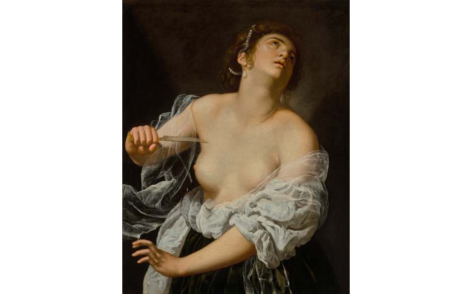

The first category is the standard. This category is meant for subjects that do have the lens of a woman, but it is not obvious or requires further explanation to be understood.
The second category is the maternal treatment of the subject. In these paintings, the artist has viewed the subjects and painted them in a softer motherly manner. This applies to the way in which the subjects are painted not the story of the subject. For instance, a piece may still be maternal if it represents a father and his children because of how the woman artist viewed and painted the scene. While women were expected to be maternal during these periods, it was often not seen in paintings because it was considered a lower or unnecessary form of representation by most men painters. y
The third category is women empowerment. These paintings show women in a position of power, whether that be in a biblical setting or in a portrait. Women did not hold power during this time, so their representation as superior beings is limited and can be understood as the product of an artistic woman’s lens.

The fourth category is expressive emotions. Women were considered to be waif-like figures, they should be reserved in the presence of society. However, because of this subservient view of women they were often powerless and experienced trauma and anguish from this position. An example would be rape, a common biblical subject. A woman artist would understand those feelings of fear and anger related to the struggle against a man, and thus be able to represent.